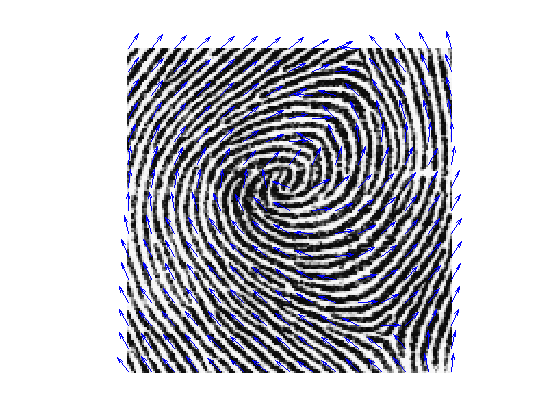
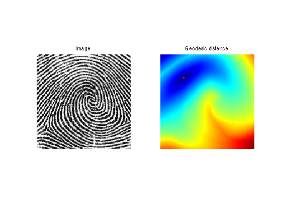
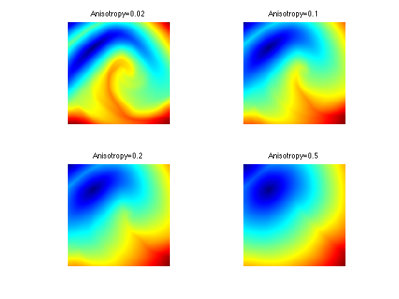
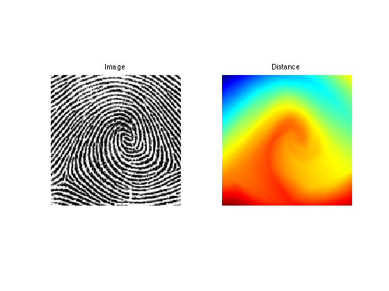
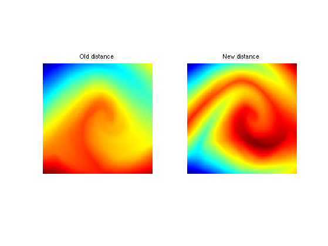
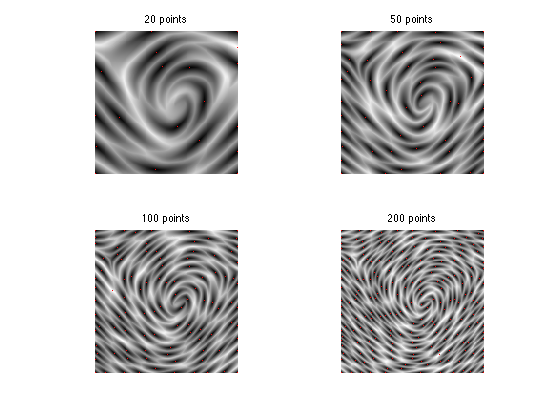

Anisotropic Fast Marching
This tour explores the use of geodesic distances for anisotropic metric.
Contents
Installing toolboxes and setting up the path.
You need to download the following files: signal toolbox, general toolbox and graph toolbox.
You need to unzip these toolboxes in your working directory, so that you have toolbox_signal, toolbox_general and toolbox_graph in your directory.
For Scilab user: you must replace the Matlab comment '%' by its Scilab counterpart '//'.
Recommandation: You should create a text file named for instance numericaltour.sce (in Scilab) or numericaltour.m (in Matlab) to write all the Scilab/Matlab command you want to execute. Then, simply run exec('numericaltour.sce'); (in Scilab) or numericaltour; (in Matlab) to run the commands.
Execute this line only if you are using Matlab.
getd = @(p)path(p,path); % scilab users must *not* execute this
Then you can add the toolboxes to the path.
getd('toolbox_signal/'); getd('toolbox_general/'); getd('toolbox_graph/');
Structure Tensor Field
An anisotropic metric is given through a tensfor field T which is an (n,n,2,2) array, where T(i,j,:,:) is a positive definite symmetric matrix that define the metric at pixel (i,j).
Here we extract the tensor field whose main eigenvector field is alligned with the direction of the texture. This can be achieved using the structure tensor field, which remove the sign ambiguity by tensorizing the gradient, and remove noise by filtering.
Load an image that contains an oscillating texture.
name = 'fingerprint';
n = 150;
M = rescale(load_image(name,n));
Compute its gradient.
options.order = 2; G = grad(M,options);
Compute a rank-1 tensor with main eigenvector aligned in the direction orthogonal to the gradient.
T = zeros(n,n,2,2); T(:,:,1,1) = G(:,:,2).^2; T(:,:,2,2) = G(:,:,1).^2; T(:,:,1,2) = -G(:,:,1).*G(:,:,2); T(:,:,2,1) = -G(:,:,1).*G(:,:,2);
Smooth the field (blur each entry).
sigma = 12; T = perform_blurring(T,sigma);
Compute the eigenvector and eigenvalues of the tensor field.
[e1,e2,l1,l2] = perform_tensor_decomp(T);
Display the main orientation field.
clf; plot_vf(e1(1:10:n,1:10:n,:),M); colormap(gray(256));
Anisotropic Fast Marching
One can compute geodesic distance and geodesics using an anisotropic Fast Marching propagation.
Anisotropy of the tensor field.
anisotropy = .1;
Build the Riemannian metric using the structure tensor direction.
H = perform_tensor_recomp(e1,e2, ones(n),ones(n)*1/anisotropy );
Starting point.
pstart = [n n]/4;
Perform the propagation.
hx = 1/n; hy = 1/n; [D, dUx, dUy, Vor, L] = fm2dAniso([hx;hy], H, pstart);
Display the result.
clf; subplot(1,2,1); imageplot(M, 'Image'); subplot(1,2,2); hold on; imageplot(convert_distance_color(D), 'Geodesic distance'); hh = plot(pstart(2),pstart(1), 'r.'); set(hh, 'MarkerSize',15); axis('ij'); colormap(gray(256));
Exercice 1: (check the solution) Compute the geodesic distance for several anisotropy, and for several starting points.
exo1;
Farthest Point Sampling
It is possible to perform an anisotropic sampling of the image using a Farthest point sampling strategy.
We use a highly anisotropic metric.
anisotropy = .02; H = perform_tensor_recomp(e1,e2, ones(n),ones(n)*1/anisotropy );
Choose the initial point.
vertex = [1;1];
Compute the geodesic distance.
[D, dUx, dUy, Vor, L] = fm2dAniso([hx;hy], H, vertex);
Choose the second point as the farthest point.
[tmp,i] = max(D(:)); [x,y] = ind2sub([n n],i); vertex(:,end+1) = [x;y];
Display distance and points.
clf; subplot(1,2,1); hold on; imageplot(M, 'Image'); axis ij; plot(vertex(2,1), vertex(1,1), 'r.'); plot(vertex(2,2), vertex(1,2), 'b.'); subplot(1,2,2); hold on; imageplot( convert_distance_color(D), 'Distance'); axis ij; plot(vertex(2,1), vertex(1,1), 'r.'); plot(vertex(2,2), vertex(1,2), 'b.'); colormap gray(256);
Update the value of the distance map with a partial propagation from the last added point.
[D1, dUx, dUy, Vor, L] = fm2dAniso([hx;hy], H, vertex);
Display old/new.
clf; imageplot( D, 'Old distance', 1,2,1 ); imageplot( D1, 'New distance', 1,2,2 ); colormap jet(256);
Update.
D = D1;
Exercice 2: (check the solution) Perform farthest point sampling.
exo2;
Anisotropic Image Approximation
One can combine the farthest point sampling strategy with a geodesic Delaunay triangulation to perform image approximation.
Load an image.
n = 256;
name = 'peppers-bw';
M = rescale(load_image(name, n));
Exercice 3: (check the solution) Compute a metric H adapted to the approximation of this image.
exo3;
Exercice 4: (check the solution) Perform farthest point sampling.
exo4;
Exercice 5: (check the solution) Compute the geodesic Delaunay triangulation of this set of point.
exo5;
Exercice 6: (check the solution) Perform image approximation using linear splines.
exo6;